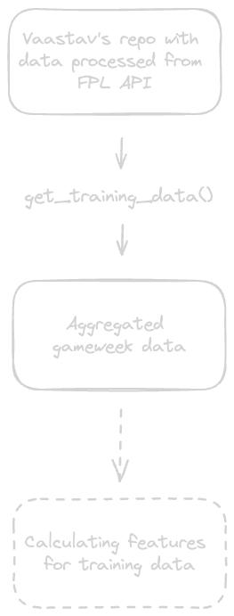

Teaching learning machines football pt.1
How I tried to satisfy my FPL obsession by trying to gain an unfair advantage through AI: Part 1 – The Setup
See the accompanying Github repo here.
Gameweek 16.
I’m midway through a season-long Fantasy Premier League (FPL) ban, which, in theory, should have won me back a few hours per week to plan a wedding.
A wedding that, despite my persistent disorganisation, I’m hopeful my partner will still allow me to attend.
I get an idea. A simple idea, which every single person who straddles the worlds of football and data, has had –
“Why don’t I just automate my FPL using AI?”
A few weeks later, here we are.
-
No FPL Skynet overlord, who can predict the number of yellow cards next week more accurately than the Albanian mafia.
-
No basic automaton to take the reins, while I focus on floral arrangements and paper thickness for wedding invites.
-
Many hours sunk; with many more decisions still to be made about the wedding.
What I did emerge with, however, are a few misguided ramblings about my first few steps into ML through the medium of football, which I’ll be sharing as a series of posts on this blog.
If you’re curious about football and data, I hope this saves you some time in ruining the randomness of “the beautiful game”.
(If you’re just here to see results, you can see them here.)
The aim
Before getting into any game mechanics like selecting players, we need to map out the core functionality: how can you predict how many points each player will get, in the next gameweek?
If I knew how many goals are scored; red and yellow cards are picked up; or anything else from this gameweek, it’s very easy to guess (or calculate) the points.
What we need to do here, however, is figure out how we can use data from last week or the weeks before, to predict what each player might score in FPL points in the week ahead.
So specifically, we need to predict FPL points ahead of time, and the model can’t have be trained on data that it wouldn’t be able to know (such as current gameweek data), when making predictions.
To get an idea of how good our predictions are, the Fantasy Premier League API also has a value called xP (expected points) per player per gameweek, which gives us a perfect benchmark to compare our results to and try to beat.
The data
The first thing we need is historical data. Luckily, getting well-structured data for the Premier League, is fairly easy.
The FPL website has an API that provides a huge amount of football data via JSON.
Parsing this JSON into a simpler tabular format was going to take a novice like me some wrangling, so at first, I resigned myself to spending Christmas unnesting JSON objects, like a sad elf.
Luckily for me, for every miserable elf there’s also a cheery Santa. And, in my case, Santa came in form of Vaastav, who, as it turns out, had already pre-processed all of the data in a well-maintained GitHub repository found here.
This repo processes the API into a csv on a per-team, per-player and per-gameweek level, with each gameweek csv having over 60 columns of data per each player per gameweek, like this:
| name | xP | total_points | goals_scored | etc. |
|---|---|---|---|---|
| Femi Seriki | 0.5 | 0 | 0 | … |
| Jack Hinshelwood | 1.5 | 0 | 0 | … |
| Jadon Sancho | 3.0 | 1 | 0 | … |
| Rhys Norrington-Davies | 0.1 | 0 | 0 | … |
| Vitaly Janelt | 2.1 | 2 | 0 | … |
| … | … | … | … | … |
Therefore, it’s fairly straightforward to get pre-processed gameweek-level data, from which to calculate features, by merging each gameweek per season, into one big table, like so:
import pandas as pd
import requests
import logging
# Set up logging
logging.basicConfig(level=logging.INFO)
logger = logging.getLogger()
# Years for which we want to get the gameweeks
TRAINING_YEARS = ["2019-20","2020-21","2021-22","2022-23"]
# Getting the teams per season
def get_teams(year):
try:
teams_url = f"https://raw.githubusercontent.com/vaastav/Fantasy-Premier-League/master/data/{year}/teams.csv"
teams = pd.read_csv(teams_url, encoding="utf-8")[["id", "name"]]
teams.columns = ["opponent_team", "opponent"]
return teams
except Exception as e:
logger.error(f"Error fetching teams for {year}: {e}")
return pd.DataFrame()
# Getting gameweeks for the years specified in TRAINING_YEARS
def get_training_data(TRAINING_YEARS):
list_of_gws = []
for year in TRAINING_YEARS:
for gameweek in range(1, 39):
logger.info(f"Getting data for {year} gameweek {gameweek}")
try:
gw_data = pd.read_csv(f"https://raw.githubusercontent.com/vaastav/Fantasy-Premier-League/master/data/{year}/gws/gw{gameweek}.csv", encoding="utf-8")
# add opponent team
teams = get_teams(year)
gw_data = pd.merge(gw_data, teams, on="opponent_team", how="left")
# add season
gw_data["season"] = year
list_of_gws.append(gw_data)
except Exception as e:
logger.error(f"Error fetching data for {year} gameweek {gameweek}: {e}")
return pd.concat(list_of_gws)
The get_training_data function outputs a dataframe from which we can start calculating features (the stats we’ll be training our model on), which looks the same as the per-gameweek level data, except with season and gameweek specified, like so:
| name | total_points | season | gameweek | etc. |
|---|---|---|---|---|
| Femi Seriki | 0 | 2022-23 | 1 | … |
| Jack Hinshelwood | 0 | 2022-23 | 1 | … |
| Jadon Sancho | 1 | 2022-23 | 1 | … |
| Rhys Norrington-Davies | 0 | 2022-23 | 1 | … |
| Vitaly Janelt | 2 | 2022-23 | 1 | … |
| … | … | … | … | … |
We’re also adding context of who the opposing team is, as this will later be helpful for calculating features that relate to the opposing team’s performance.
The tooling
While I can get by in Python, I’d come to my first ML project pretty damn fresh. I hadn’t ever got round to tinkering with sklearn; I thought that a feature is any film shown at the cinema; and I’d have bet money that a hyperparameter is a gadget Anikin would want to buy in the back-alleys of Tatooine.
Therefore, to actually figure out how to train a model, I’d need a mentor, I’d need an idiot-proof ML library, and I’d need compute.
The mentor
Luckily for me, I already knew of a wise companion called ChatGPT: my very own machine learning Shifu, who explains concepts simply and demonstrates them through code.
Whether quickly plotting graphs in matplotlib or seaborn; providing in-depth explanations of different metrics to let you know how well a model is performing; or refactoring code to be more performant, I can’t emphasise how much of a help ChatGPT has been, and it meant I’d trained my first model in a matter of days instead of a matter of months.
[I’ll eventually follow up with a post on how to use ChatGPT effectively as a coding buddy and mentor, and I’ve included a few example prompts I used in the next post.]
The idiot-proof machine learning library
Around the time I started on this project, I also happened to stumble across a NeurIPS roundup article with reference to AutoGluon - a state of the art AutoML library. It promised to do all of the heavy lifting for me, and quickly won me over with a super easy “get started“ guide.
Fast forward a few weeks, and I’m still hugely impressed at how easy it is to run your first ML project using AutoGluon. With some data and some basic Python, anyone can run state-of-the-art ML models with great results.
The compute
Lastly, as I was browsing through a few other people’s attempts at the same challenge on GitHub for inspiration, I found a reference to Google Colab, which offers a free instance that has superior disk space to my work laptop, 12gb memory, and a GPU. That meant that while all of the pre-processing was done on my laptop, I could leave the model training in the Colab notebook in the background, without affecting my work.
The pipeline so far
Put all the above together, and we have the setup needed to train our very own football-learning machine monster.
Here’s the rough pipeline of our setup so far:

In the next post, I’ll cover feature selection: how we can choose stats that give the machine learning model the best chance of predicting points accurately.